Vagues et nuages
Dans cette installation, j’ai essayé de recomposer un paysage marin : des vagues formées par environ six cents feuilles courbes, dialoguant avec des formes de nuages suspendues. L'ensemble crée une ambiance calme et imaginaire.
Mon travail a été influencé par l'installation The Silent Reflection de Hans Op de Beeck, où il suggère une ouverture vers l'extérieur et un horizon infini. Mes pièces dans l’espace font écho aux ombres du jardin extérieur, comme un mirage porté par le gris neutre du papier.
Le titre « Où la mer rejoint le ciel » (海天一线) évoque cette ligne d'horizon qui n'existe pas physiquement, mais que j'ai tenté de matérialiser au bord de chaque feuille de papier.
Mon travail a été influencé par l'installation The Silent Reflection de Hans Op de Beeck, où il suggère une ouverture vers l'extérieur et un horizon infini. Mes pièces dans l’espace font écho aux ombres du jardin extérieur, comme un mirage porté par le gris neutre du papier.
Le titre « Où la mer rejoint le ciel » (海天一线) évoque cette ligne d'horizon qui n'existe pas physiquement, mais que j'ai tenté de matérialiser au bord de chaque feuille de papier.
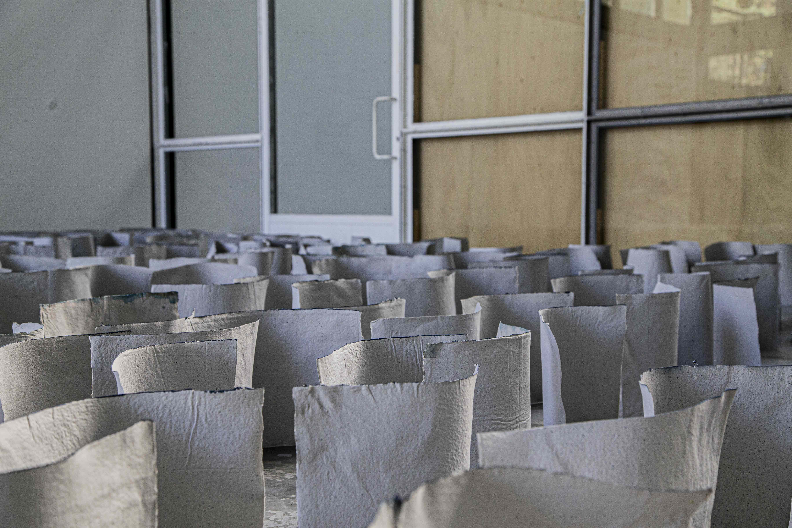
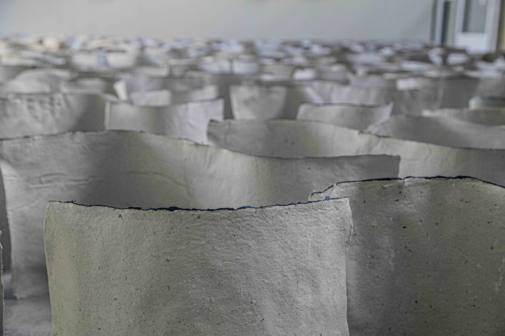
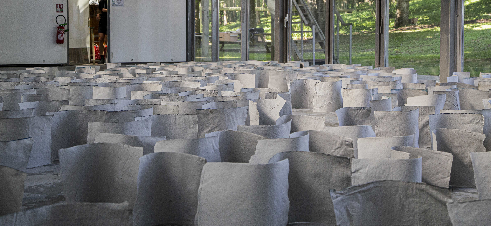
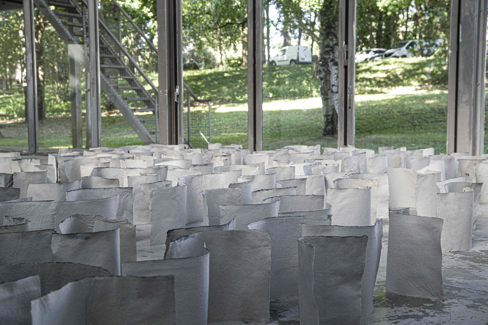
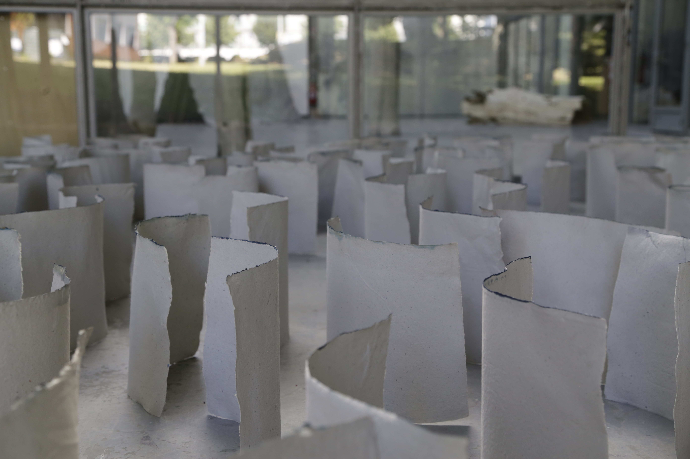
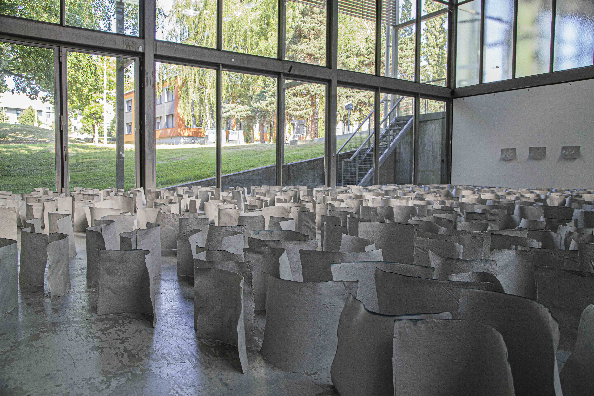
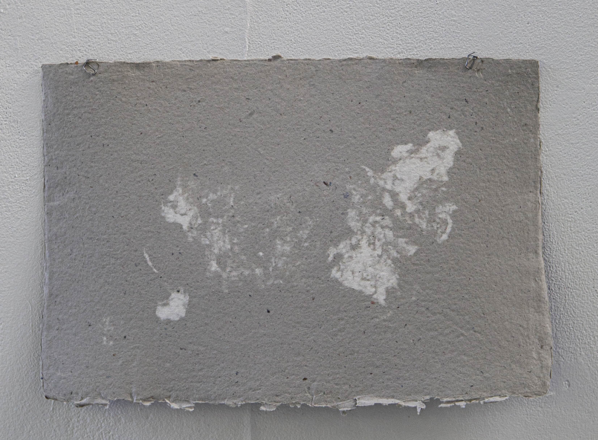
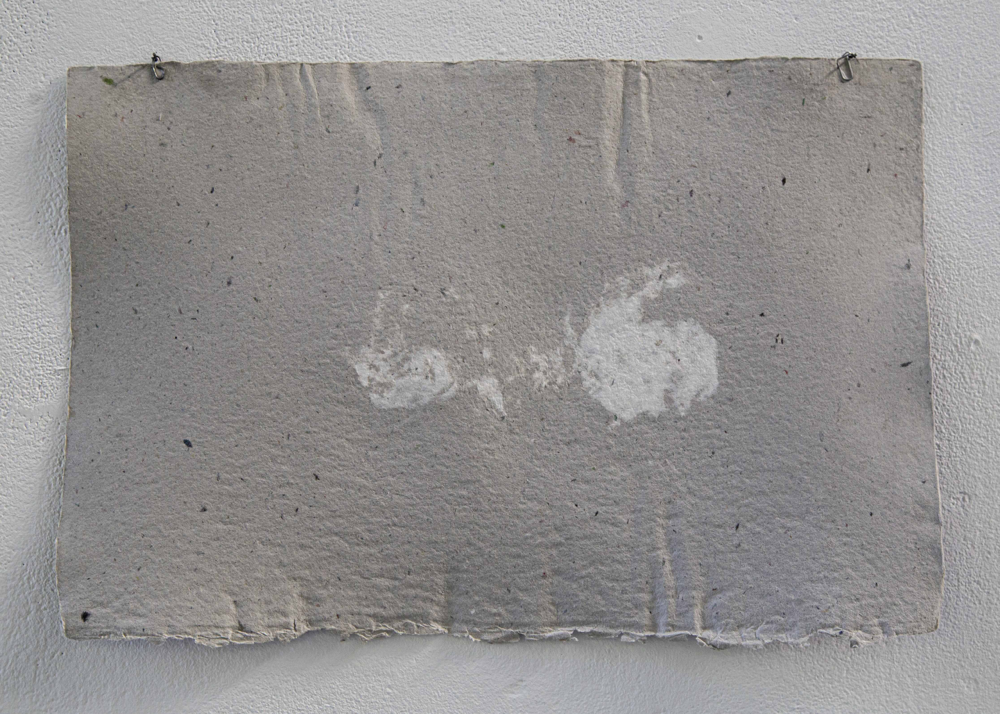
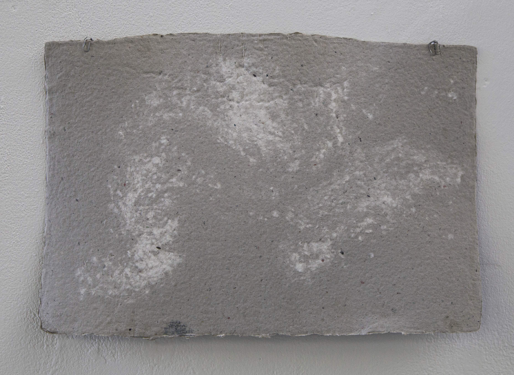
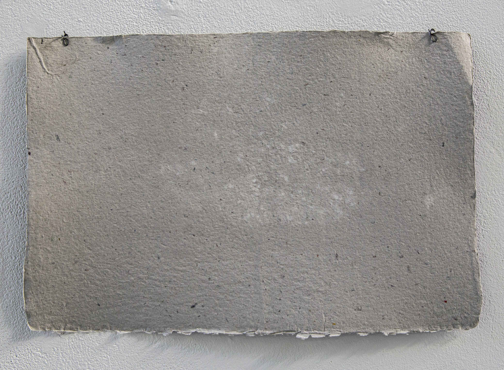
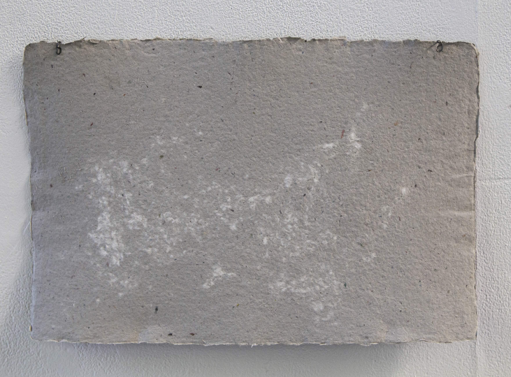
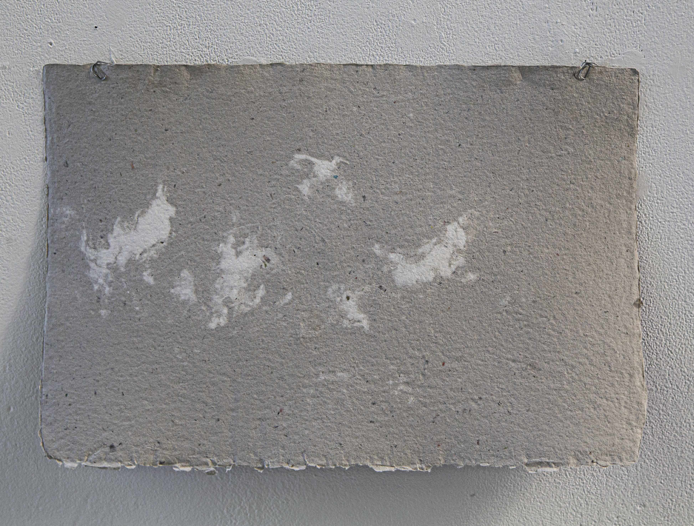
Installation : Vagues et nuages, dimensions variables, 2025
×